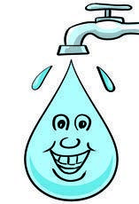
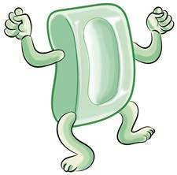
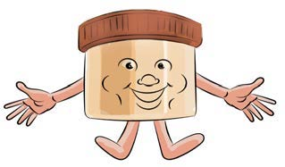
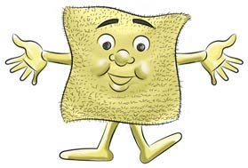

I wash my face.
I wash my face.
 A friendly cat guide introduces the next learning activity.
A friendly cat guide introduces the next learning activity.I use these items to wash my face.
Questions

Questions
1. Name the items used for washing the face presented in
pictures 1-6.
2. Name other items used for washing the face that you
know.
Activity 2
Boast about items for washing face by mentioning their uses.
I am water, I
I am soap, I
wash your face
remove dirt.
to be clean.

A drop of clean water shown as a character that washes the face.

A bar of soap shown as a character that removes dirt.
I am body oil,
I am a towel,
I make your
I dry your
skin healthier.
face.

A container of body oil shown as a character that keeps skin healthy.

A towel shown as a character that dries the face.